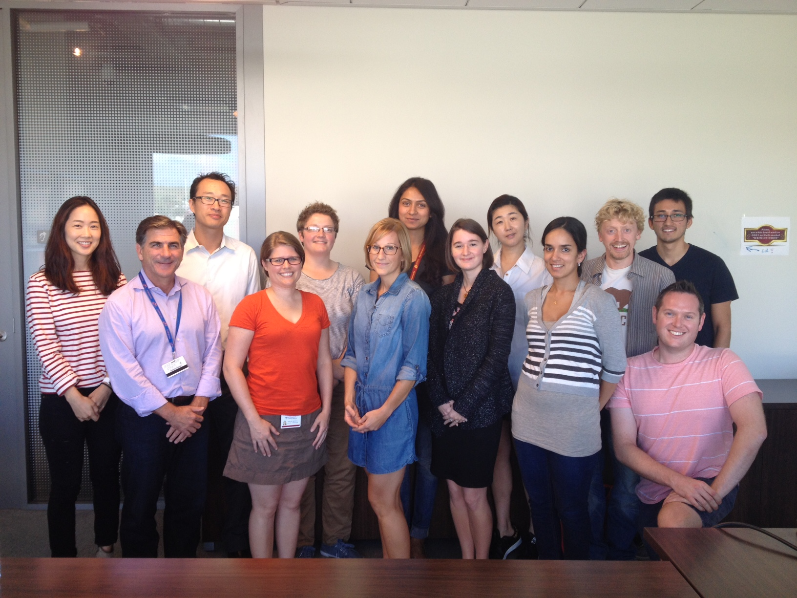

Valente directs the Center for Applied Network Analysis (CANA) which hosts a twice monthly, two-hour, lab meeting in which students, post-docs, and faculty present work in progress. Currently there are 30 active members of CANA from six different schools across the University of Southern California (USC).
CANA meetings cover a diverse set of topics all pertaining to conducting research using the social network approach. A primary emphasis is to present work in progress (WIP) so members can present drafts of the research and work out interpretation of findings. WIP topics range from how to construct a survey, to methods to increase response rates, and how to manage one’s data.
CANA also conducts workshops on technology and techniques for conducting analysis. Recent workshops include basic R, STATNET for network analysis, ERGM and SIENA.